AI 每日新聞彙整
全部主題
其他
4 家媒體報導geminigoogleintel
Google’s more personalized Gemini AI is heading to your car
Google is bringing Personal Intelligence to Gemini AI in your car. With this update, Gemini in Android Auto and cars with Google built-in can tap into your information across Google apps, including Gmail, Calendar, Maps, Photos, YouTube, and Search. As an example, Google says you
3 家媒體報導cobolopenaimultilangbench
OpenAI 增强 AI 模型攻克冷门编程语言，COBOL 迁移准确率飙至 97.9%
IT之家 10 月 21 日消息，OpenAI 公司昨日（10 月 20 日）发布研究报告， 称增强 GPT-6 Astra 等模型构建和迁移 COBOL、Fortran、Visual Basic 等“低资源编程语言”的能力。 这类语言虽然公开代码和文档较少，却广泛支撑银行、ATM、天气预报和核安全分析等关键系统。 为衡量能力，OpenAI 推出两项评测：MultiLangBench 要求模型用 20 种语言从零构建兼容 SQLite 的数据库引擎；另一项评测则要求模型保持原有业务行为不变的情况下，将 COBOL 程序迁移至 C++、Java、Pytho
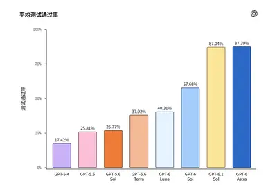
3 家媒體報導musemetathey
Meta Muse exposes users' personal and business secrets when they share conversations
Meta is suspending the sharing feature while it investigates its privacy.
2 家媒體報導huggingnetflixface
Hugging Face CEO warns that Netflix’s OpenAI hack documentary isn’t accurate
Before you share the Netflix documentary "AI Gone Rogue" take note. Clem Delangue, Hugging Face's co-founder who is featured in the film, says it went "full doomer mode" and isn't accurate.
2 家媒體報導hbmrubinhbm4
輝達 Rubin 架構維持 12 層 HBM4 方案！TrendForce：2027 年 HBM 價格將飆漲 121%
輝達新一代 Rubin AI 加速器為滿足算力需求，傳出主力產品將維持 12 層 HBM4。此舉雖確保效能，但也預示 HBM 市場將因產品升級與成本墊高而大幅漲價，成為影響未來 AI 基礎設施的關鍵。
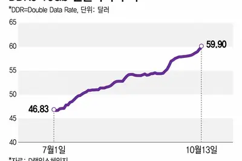
2 家媒體報導torchtpupytorchopen-sources
谷歌开源 TorchTPU，挑战英伟达 AI 生态主导地位
IT之家 10 月 21 日消息，谷歌于当地时间周二宣布，面向谷歌 TPU 的原生 PyTorch 框架 TorchTPU 现已在 GitHub 上开源。借此，谷歌与亚马逊一同尝试打破英伟达在人工智能行业的垄断。目前绝大多数人工智能应用默认都是基于英伟达芯片，也就是图形处理器（GPU）开发运行。 PyTorch 是一款热门开源工具库，人工智能应用开发者与初创企业依靠它搭建、训练和部署人工智能模型。有统计称，85% 的人工智能应用都在使用 PyTorch。PyTorch 最初由 Meta 在 2016 年开发，那时人们还完全没有意识到大语言模型将会改变世界
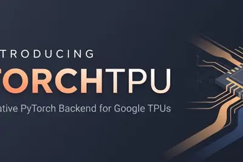
- IT之家 谷歌开源 TorchTPU，挑战英伟达 AI 生态主导地位
- Hacker News (100+) Google open-sources TorchTPU, a native PyTorch back end for TPUs
2 家媒體報導opencodesafetyopensource
AI程式碼代理平臺OpenCode資料外洩，尋求OpenAI、Anthropic、Google合作處理
開源AI程式碼代理工具OpenCode於10月16日晚間發生資安事故，攻擊者發動大規模蒸餾攻擊，可能取得部分使用者儲存在OpenCode Console工作區中的第三方AI服務API金鑰，影響約1.4%的Console使用者，OpenCode已透過電子郵件進行通知，並與OpenAI、Anthropic、Google合作因應此事。綜合多家媒體的報導，攻擊者駭入OpenCode即將淘汰的系統而得逞。
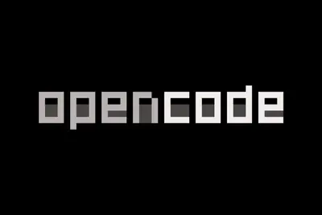
2 家媒體報導orchestrabiorosalind
OpenAI acquires startup Orchestra Bio to beef up its biotech business
OpenAI says it's adding Orchestra's team and technology to work on Rosalind, its AI model for life sciences research, and to its related Rosalind Workbench tool, a harness that aims to help researchers plan experiments and analyze results.

2 家媒體報導awstrainiumtorchneuron
AI 模型換晶片免重寫程式碼？亞馬遜推 TorchNeuron，挑戰 NVIDIA CUDA 優勢
從 Google、微軟到亞馬遜，科技巨頭紛紛投入自研 AI 晶片，試圖提供 NVIDIA GPU 以外的算力選擇。然而，NVIDIA 的競爭優勢不只有硬體效能，還包括難以複製的 CUDA 軟體生態系。開發者長期累積的程式碼、運算工具與最佳化技術，讓企業即使想改用其他晶片，也面臨不小的轉換成本。如今，亞馬遜宣稱推出「無須重寫程式碼」的新工具，準備從軟體切入，挑戰這道護城河。 亞馬遜旗下雲端服務事業 AWS 在美國時間 10/19 宣布，將開發工具 TorchNeuron 從私人測試擴大至公開測試，讓開發者只需調整少量設定，就能在自家 Trainium 晶片
terafabspacexxai
马斯克：SpaceX 与特斯拉的 Terafab 项目计划 2028 年实现芯片量产
IT之家 10 月 21 日消息，埃隆 · 马斯克（Elon Musk）在当地时间周二的 SpaceX 电话会议上表示，SpaceX 与特斯拉合资成立的芯片制造企业 Terafab 计划在 2028 年第三季度实现量产。 谈及这份时间表时，马斯克称：“我给这个目标预留了很大的误差区间，因为我们不确定最终能否如期达成。” 该项目计划每年产出 1 太瓦算力，供给人工智能与机器人业务使用，这份时间表本身被马斯克评价为“极具挑战性”。在美国，一座前沿逻辑芯片工厂的建设周期通常需要三年甚至更久。 马斯克介绍，这座规划设在得克萨斯州的综合厂区，将在同一园区内完成先进
lpu+euvsamsung
三星 8 纳米工艺“再活一届”：性能提升 12%、功耗降低 15%、芯片面积缩小 8%
IT之家 10 月 21 日消息，科技媒体 gurufocus 昨日（10 月 20 日）发布博文， 报道称三星晶圆代工部门将扩展其 8 纳米工艺技术，推出第二代 8LPU+ 平台。 据三星提交给 IEDM 2026 的技术摘要， 相较上一代 8LPU，新平台性能提升 12%、功耗降低 15%、芯片面积缩小 8% ，并通过 ULL-SRAM 与 cHVT 器件降低待机漏电。 三星计划太平洋标准时间 12 月 14 日下午 4:20~4:45（IT之家注：北京时间 12 月 15 日星期二上午 8:20 – 8:45）在 IEDM 2026 活动中公开演讲
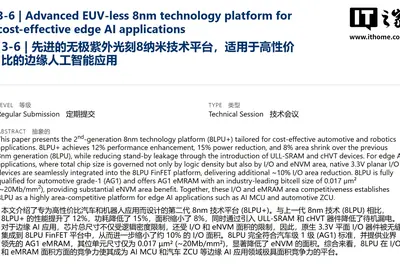
computehbm
突破AI晶片「記憶體牆」 黃漢森：HBM、光互連、3D堆疊成關鍵
AI處理器算力持續提高，記憶體頻寬成長卻相對落後，資料供應不足已成為限制AI晶片效能與能源效率的重要因素。如何縮短記憶體與運算單元的距離、提高晶粒間互連密度，成...
- DIGITIMES 突破AI晶片「記憶體牆」 黃漢森：HBM、光互連、3D堆疊成關鍵
teslaroadster
Tesla新Roadster是追求商業價值 還是純粹科技浪漫？
Tesla 15日發表睽違多年新一代Roadster，以SpaceX火箭推進技術打造具飛行功能的純電跑車，但市場認為這類展示不具任何商業價值、是毫無意義項目，更沒有為人工智慧（...
- DIGITIMES Tesla新Roadster是追求商業價值 還是純粹科技浪漫？
cijintelalot
凌羣拓展台灣自主AI技術海外布局 與日本CIJ簽署戰略合作協議
AI正從「會對話」快速進化為「會做事」的企業營運新戰力。凌羣電腦於「2026台灣國際人工智慧暨物聯網展（AloT Taiwan）」，以「Edge Intelligence Now全面啟動」為...
- DIGITIMES 凌羣拓展台灣自主AI技術海外布局 與日本CIJ簽署戰略合作協議
risc-valibabac950
中國RISC-V欲攻伺服器市場 玄鐵累計出貨已逾60億顆
中國RISC-V處理器正從嵌入式裝置與控制晶片，逐步跨向伺服器及AI運算市場。阿里巴巴達摩院10月19日在2026 RISC-V中國峰會公布玄鐵C950在多核心運算、AI推論及伺...
- DIGITIMES 中國RISC-V欲攻伺服器市場 玄鐵累計出貨已逾60億顆
20272029
雲端AI續當2027年主力 邊緣AI逆風不等於台廠沒機會
目前市場對雲端AI市場的需求，普遍已一路看旺至2028~2029年左右，未來2~3年的訂單能見度也非常清晰，短期的2027年自然也是如此。無論歐美晶片大廠或台系業者，普遍...
- DIGITIMES 雲端AI續當2027年主力 邊緣AI逆風不等於台廠沒機會
hbm2012200
手機品牌棄守低價機保獲利 晶片通膨加速入門機退場潮
AI需求推升記憶體價格，成本壓力正加速全球智慧型手機市場分化。2026年第3季全球出貨量初步估計年減20%，創2012年以來同期新低，售價低於200美元的入門產品，承受更大...
- DIGITIMES 手機品牌棄守低價機保獲利 晶片通膨加速入門機退場潮
taitronicsaiot
竹科經驗出海再進一步 墨西哥索諾拉州、波蘭來台取經
外貿協會與電電公會共同主辦2026年「台北國際電子產業科技展（TAITRONICS）」與「台灣國際人工智慧暨物聯網展（AIoT Taiwan）」，20日在南港與「台灣電路板產業...
- DIGITIMES 竹科經驗出海再進一步 墨西哥索諾拉州、波蘭來台取經
robot2027openai
不再只提供「大腦」 OpenAI盼2027年秀人形機器人原型
OpenAI執行長Sam Altman證實，公司正投入人形機器人開發，預計2027年展示原型。
- DIGITIMES 不再只提供「大腦」 OpenAI盼2027年秀人形機器人原型
黃漢森揭AI晶片技術轉折 電晶體微縮走向3D整合、每瓦效能
AI運算需求持續擴大，半導體產業面臨技術發展路線的轉折，過去電晶體微縮推動晶片密度、效能與能源效率提升的主要動力，隨著製程節點持續推進，元件架構、材料、製程整...
- DIGITIMES 黃漢森揭AI晶片技術轉折 電晶體微縮走向3D整合、每瓦效能
samsunghbmnvidia
三星HBM牽手台積電有代價？ 為搶NVIDIA訂單恐臨四大隱憂
三星電子（Samsung Electronics）為打入NVIDIA客製化高頻寬記憶體（NVHBM）供應鏈，傳不惜打破過去堅持的一站式（Turnkey）整合供應模式，將採用一直視為自家...
- DIGITIMES 三星HBM牽手台積電有代價？ 為搶NVIDIA訂單恐臨四大隱憂
claudenistanthropic
Claude 半小時解開 26 年密碼學謎題，揭 NIST 曲線種子來自系統時間
Anthropic 10 月 16 日公布，旗下 Claude 內部研究模型花費不到半小時，成功找出困擾密碼學 […]
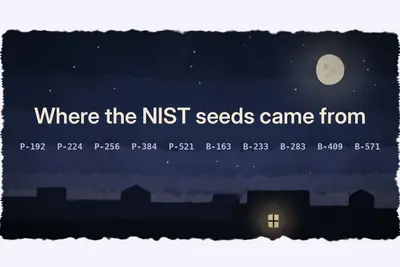
- 科技新報 TechNews Claude 半小時解開 26 年密碼學謎題，揭 NIST 曲線種子來自系統時間
threadsmusesensor
Meta AI 助手 Muse 上线 40 天美国下载量破千万，仅 11 款应用曾达成该纪录
IT之家 10 月 21 日消息，Meta 的人工智能助手 Muse 现已跻身仅十余个上线 40 天内美国下载量破千万的移动应用行列。市场情报机构 Sensor Tower 的最新数据显示，Muse 自 9 月推出以来，累计下载量达 1090 万次，其中美国地区下载量为 1020 万次。 Sensor Tower 高级洞察分析师卡拉 · 李（Kara Lee）表示，迄今为止仅有另外 11 款应用达成过这一上线后的里程碑，上一款实现该成绩的正是 Meta 的 Threads，时间为 2023 年 7 月。 李提到，其余达成这一规模的应用大多是手游，例如堡垒
pinchatgpt
OpenAI 为 ChatGPT 推出聊天上锁功能，通过 PIN 码、生物识别保护敏感对话
IT之家 10 月 21 日消息，OpenAI 于当地时间周二宣布，用户现在可以为 ChatGPT 对话上锁。当其他人有可能看到屏幕或使用自己设备时，这项功能能够保护敏感对话的隐私。用户可以设置四位数字 PIN 码保护锁定对话，在支持的设备上也可以使用面容 ID（Face ID）或触控 ID（Touch ID）。 据IT之家了解，该功能和应用内的临时对话不同，临时对话属于独立会话，不会出现在聊天记录里，而锁定对话支持用户随时回看。 OpenAI 表示，这项功能面向这类场景：用户正在讨论私人事项或是策划惊喜，需要把相关对话保护起来，之后把设备交给亲友，向对
spacexxai
地表最强科技联姻：马斯克称特斯拉与 SpaceX 合并“有很多好处”
IT之家 10 月 21 日消息，彭博社今天（10 月 21 日）发布博文，报道称在 2026 财年第三财季（2026 年 7 月～2026 年 9 月）财报电话会上， 全球首富埃隆 · 马斯克表示 SpaceX 与特斯拉均已成立由独立董事组成的特别委员会，研究两家公司潜在合并的可能性。 若交易最终落地，有望成为有史以来规模最大的企业合并。马斯克称，合并“有很多好处”，尤其是在双方共同开发“超级智能”（SI）软件、推进人工智能与自动驾驶等业务方面，合作空间巨大。不过他强调，目前两家公司的委员会尚未就交易条款达成一致，合并并不确定。 由于马斯克同时担任两家
judgealtmanlawsuit
Judge dismisses Sam Altman’s sister’s sexual abuse lawsuit
On Tuesday, US District Judge Zachary Bluestone dismissed the lawsuit Ann Altman filed last year alleging that her brother, OpenAI CEO Sam Altman, had sexually abused her throughout her childhood. As reported earlier by The Guardian, the judge wrote that over the past year, Ann h
pitchesbillkilled
Anthropic pitches AI safety bill that may block a model if 50+ people could be killed
The proposed policy seems to offer protections against AI run amok but actually forbids federal agencies from blocking a model's release without the permission of a judge.
deepseek
【科技早餐】德國攜 NVIDIA 推工業 AI，黃仁勳：下一波是實體 AI
【科技早餐】今天精選 6 則國內外重要科技新聞。 ＊德國攜 NVIDIA 推工業 AI，西門子工廠展示新應用 德國政府 10 月 19 日與 NVIDIA 簽署合作意向聲明，擬結合德國製造業的工程知識與資料，推進實體 AI 模型，擴大工業 AI 應用並建立歐洲產業生態系。NVIDIA 執行長黃仁勳在柏林投資峰會表示，下一波 AI 是實體 AI，相關技術能增強德國既有的工業專長。總理梅爾茨則呼籲中型企業讓 AI 運用累積資料，將製造經驗轉化為競爭優勢。目前合作仍屬意向聲明，政府合作案的具體投資金額尚未正式公布。 同日，西門子（Siemens）公布與 NVI
- TechOrange 科技報橘 【科技早餐】德國攜 NVIDIA 推工業 AI，黃仁勳：下一波是實體 AI
anthropicreportedlyowns
Anthropic’s cloud partnerships are getting messy
Anthropic is reportedly struggling to secure enough compute from cloud providers that increasingly view it as a competitor, even as its infrastructure spending balloons ahead of a planned November IPO.
195185amd
超微电脑 2027 财年第一财季预计营收 185 亿-195 亿美元，高于此前预期
IT之家 10 月 21 日消息，超微电脑今日发布 2027 财年（2026 年 7 月 1 日～2027 年 6 月 30 日）第一财季（2026 年 7 月 1 日～2026 年 9 月 30 日）业绩预告报告： 营业总收入 ：185 亿美元 ~195 亿美元 （IT之家注：现汇率约合 1238.33 亿元 ~1305.26 亿元人民币） 毛利率 ：12%~12.5% AI 解读 本次 2027 财年第一财季业绩预告大幅超出市场预期，营收和毛利率均显著高于此前指引。 公司主营业务 超微电脑（Super Micro Computer）是全球领先的应用优
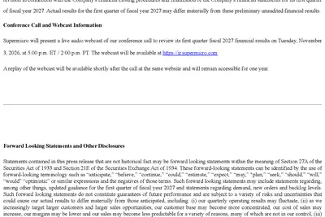
beatingexpectationsspacex
SpaceX’s AI business is beating expectations
SpaceX hit profitably in the third-quarter, with net income of $4.4 billion. AI was the engine.
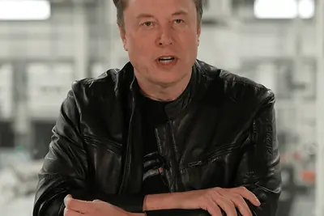
- TechCrunch AI SpaceX’s AI business is beating expectations
metatraindrops
Meta tries to scapegoat staff who downloaded torrents to spare execs
Meta argues nobody “decided” to pirate books to train AI.
battledronesvibe
Battle Drones - a vibe coded RTS with audio-based multiplayer
My latest vibe coded game experiment is a Command & Conquer style RTS (Real Time Strategy) game called Battle Drones ( play it here ). Unlike my previous experiments , this one is actually fun to play . I'm somewhat embarrassed to admit that I got there by telling Claude to "Make
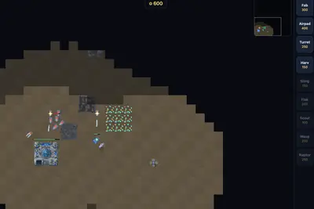
amazonjoinedattacking
Google has joined Amazon in attacking Nvidia’s stronghold with AI app developers
Google has joined Amazon in releasing a developer tool that makes it easy for PyTorch users to move their apps off Nvidia GPUs.
locksomethingchats
ChatGPT now lets you lock your chats
The company says the feature is designed for situations where users might be discussing something personal or planning a surprise and want to keep those conversations private when handing their device to friends or family to show them something in another chat.
- TechCrunch AI ChatGPT now lets you lock your chats
ukrainedronerescue
Ukraine’s drone rescue of wounded soldier puts much touted idea into practice
Ukraine’s latest drone innovation may boost bleak odds of evacuating casualties.
cosmos3-h-dreamsclinicalsurgery
NVIDIA Cosmos3-H-Dreams: Bringing Clinical Surgery to Life Through Generative Simulation
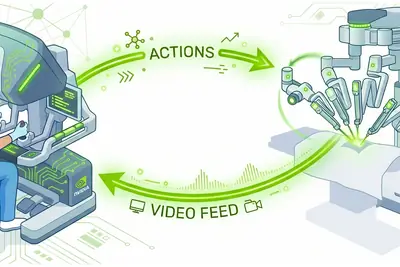
bytedancefrenchgovernment
French Government Calls Emergency Meetings With Platforms Over Protests
TikTok and other sites were told to curb protest footage and AI-altered images, while online retailers like Vinted and eBay reportedly signed an agreement stop looted goods from flooding resale sites.
fairstressdeeperevaluation
FairStress: A deeper evaluation of fairness in LLM decision-making
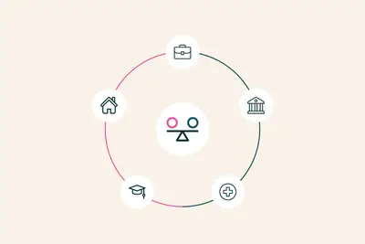
urlhttpscomments
DeepInfer: High-performance inference framework for DeepSeek models
Article URL: https://github.com/deepseek-ai/DeepInfer Comments URL: https://news.ycombinator.com/item?id=50163277 Points: 2099 # Comments: 818
- Hacker News (100+) Voxtral 3
- Hacker News (100+) DeepInfer: High-performance inference framework for DeepSeek models